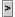
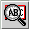

Opening Popup and Secondary Windows From an HTML Topic
In an HTML topic, you can link to any help topic in your help system and display
it in a number of different windows.
- You can link to the help topic by using the standard
<a href=URL>
syntax. The help topic opens in the current help viewer as another topic.
- You can use the
<object> tag to open a popup window.
- You can use the
<object> tag to open a secondary window.
Secondary windows and popups are implemented by a the lightweight component
class JHSecondaryViewer. You use this class in an HTML topic by
defining an <object> tag with the appropriate parameters.
This topic describes how these windows look and how to use this tag to display
popup and secondary windows.

| Popups and secondary windows are not used in
this JavaHelp System User's Guide because they cannot be included
in the PDF version. To see actual examples of how these windows can be used,
experiment with the object demo located in the following directory:
demos\bin
You can also launch the object demo program by using shortcuts (program
groups, desktop icons, links) that you might have created during the installation
of the JavaHelp system.
|
Popups and secondary windows are functionally similar. They are both fully
capable HTML windows that can include graphics, links, and lightweight components.
Most of the features described in this topic apply to both types of windows.
The following lists describe their differences:
Popups:
- Are always displayed directly adjacent to the object the user clicks to
activate the popup.
- Cannot be resized or moved by the user.
- Are dismissed whenever focus is changed to another part of the help viewer.
- Have only a content viewer.

Secondary windows:
- Can be displayed anywhere on the screen.
- Can be iconified, resized, and moved by the user.
- Persist until they are dismissed or the help viewer is dismissed.
- Can contain a navigation pane and a toolbar, but by default have a content
viewer only.

Working with Popups and Secondary Windows
You define the characteristics of a popup or secondary window
by using a set of parameters with the <object>
tag. For example, the following <object>
tag definition creates a secondary window that uses the presention
named "secondary window" defined in the helpset
file. The secondary window is activated by clicking the
text object "Click here".
<object classid="java:com.sun.java.help.impl.JHSecondaryViewer">
<param name="content" value="../topicB/task_topic.html">
<param name="viewerActivator" value="javax.help.LinkLabel">
<param name="viewerStyle" value="javax.help.SecondaryWindow">
<param name="viewerSize" value="300,400">
<param name="viewerName" value="secondary window">
<param name="text" value="Click here">
<param name="textFontFamily" value="SansSerif">
<param name="textFontSize" value="x-large">
<param name="textFontWeight" value="plain">
<param name="textFontStyle" value="italic">
<param name="textColor" value="red">
</object>
This popup object has the following characteristics:
- The content of the window is the file at the location
../topicB/glossary_def.html.
- The object that the user clicks (
viewerActivator) is a link.
- The type of window (
viewerStyle) is a popup.
- The size of the window (
viewerSize) is 300 pixels wide by 400
pixels high.
- The text that the user sees in the link is "Click here".
- The remaining
param values define the font, font size, weight,
style, and color of the text that the user sees.
The <param> element specifies parameters to the JHSecondaryViewer
component. The <param> element takes two attributes: name,
and value. Parameters can be specified in any order. If parameters
conflict, the one specified last is used. Valid parameter names are:
viewerStyle
content
viewerActivator
viewerSize
viewerLocation
viewerName
iconByName
iconByID
text
textFontFamily
textFontSize
textFontWeight
textFontStyle
textColor
The following sections describe each element of the object tag definition and
provide examples of a parameter that performs a particular function.
Window Type (viewerStyle)
The type of window, popup or secondary, is defined by the following parameter:
<param name="viewerStyle"
value="javax.help.Popup"|"javax.help.SecondaryWindow">
If you omit this parameter, the window defaults to a secondary window.
For example, the following parameter specifies a popup:
<param name="viewerStyle" value="javax.help.Popup">
Content or ID
The content of the object is defined by one of the following parameters:
<param name="content" value="URL >
<param name="id" value="MapID >
The content of popups and secondary windows is rendered by the same HTML engine
used in the main help viewer. Anything that is rendered in the main help viewer
can be used in a popup or secondary window, including links, graphics, and lightweight
components (for example, popup/secondary windows). You can specify the topics
displayed in a window by using a URL or a JavaHelp system map ID.
|
| If you use a link in a popup or secondary window, whatever
you link to will also be displayed in that same window. Therefore, links
are not often used in these kinds of windows because it is preferable to
keep users in the main viewer where they have access to the TOC, index,
and other navigational tools.
|
You indicate the object that the user clicks to activate the window with the
following parameter:
<param name="viewerActivator"
value="javax.help.LinkButton"|"javax.help.LinkLabel">
Users activate popup/secondary windows by clicking one of the following objects:
Button ()
This object is a standard button provided as part of the popup or secondary
window component. You can use the button as pictured to the left or you can
specify a string of text or an image to replace the ">" character on the button.
The following sample code defines a button with the text "ClickMe":
<param name="viewerActivator" value="javax.help.LinkButton">
<param name="text" value="ClickMe">
Here's what this button looks like: 
The following sample code defines a button that has a GIF image on it:
<param name="viewerActivator" value="javax.help.LinkButton">
<param name="text" value="../images/popup_icon.gif">
Here's what this button looks like: 
Text object
This object is a specified string of text inserted inline with the text of
the topic. You can control font characteristics of the text to make it stand
out.
For example, following parameters define the text object "Click here" to be
SanSerif, medium in size, bold, italic, and blue:
<param name="viewerActivator" value="javax.help.LinkLabel">
<param name="text" value="Click here">
<param name="textFontFamily" value="SansSerif">
<param name="textFontSize" value="medium">
<param name="textFontWeight" value="bold">
<param name="textFontStyle" value="italic">
<param name="textColor" value="blue">
Here's what this text looks like: Click
here
Graphic object
This object is a GIF or JPG image.
The following sample code defines a GIF image from the file rel_topic_button.gif:
<param name="viewerActivator" value="javax.help.LinkLabel">
<param name="iconByName"
value="../images/rel_topic_button.gif">
Here's what this button looks like: 
Window Size (viewerSize>, Location (viewerLocation) ,
and Name (viewerName)
You can specify the height and width of a popup or secondary window. When
content exceeds the size of the window, scroll bars are automatically added
to the window. For example, to specify a width of 300 pixels and a height of
400 pixels, use the following parameter:
<param name="viewerSize" value="300,400">
For secondary windows, you can also specify the window's position and name.
Window Location
You can specify the position of secondary windows on the screen. The parameter
specifies the x,y position (in pixels) of the upper left corner of the secondary
window on the screen, with 0,0 being the upper left corner of the screen. Popups
ignore this parameter. For example, the following parameter specifies a window
whose top left corner is 300 pixels from the left side of the screen and 400
pixels from the top:
<param name="viewerLocation" value="300,400">
Named Windows (secondary windows only)
You can name secondary windows. Doing so enables you to reuse an already active
window. Popups ignore this parameter.
For example, the following parameter defines a window with the name glossary_window:
<param name="viewerName" value="glossary_window">
Text
When you add text to a button or use a text object as an activator, you can
control the following font characteristics:
| Font family
Parameter name:
textFontFamily |
You can set the font family to:
Serif
SansSerif
Monospaced
Dialog
DialogInput
Symbol
For example,
<param name="textFontFamily" value="SansSerif">
|
| Font size
Parameter name:
textFontSize |
You can set the size of the font to:
xx-small
x-small
small
medium
large
x-large
xx-large
bigger (Increases the current base font size by 1)
smaller (Decreases the current base font size by 1)
nnpt (Sets the font size to a specific point value of nn)
+n (Increases the current base font size by a value of n)
-n (Decreases the current base font size by a value of n)
n (Sets the font size to the point size associated with the
index n)
For example, <param name="textFontSize" value="x-large">
|
| Font weight
Parameter name:
textFontWeight |
You can set the weight of the font to:
plain
bold
For example, <param name="textFontWeight" value="plain">
|
| Font style
Parameter name:
textFontStyle |
You can set the style of the font to:
plain
italic
For example, <param name="textFontStyle" value="italic">
|
| Font color
Parameter name:
textColor |
You can set the color of the font to:
black
blue
cyan
darkGray
gray
green
lightGray
magenta
orange
pink
red
white
yellow
For example, <param name="textColor" value="red"> |
See also:
- Creating Lightweight Java Components